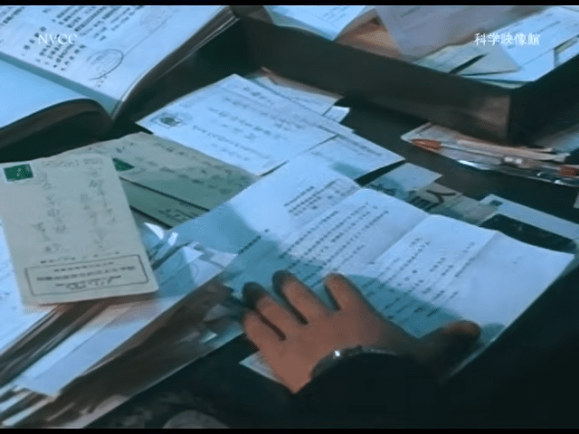
교토 경찰서에 협조 공문을 발송
전국 학교에서 온 서류를 처리하는 경찰
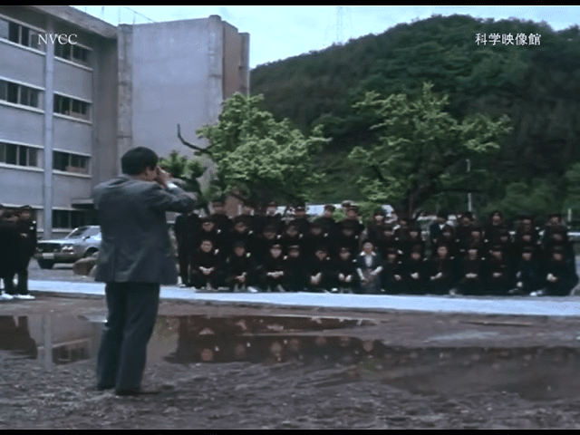
빠른 단체사진 촬영을 위해 출발전 포지션 잡는 연습도 미리
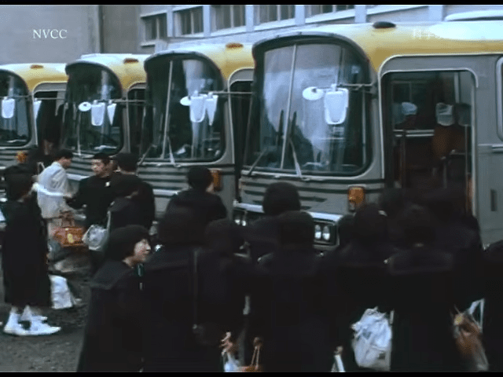
학교에서 신칸센역으로 버스를 타고 이동
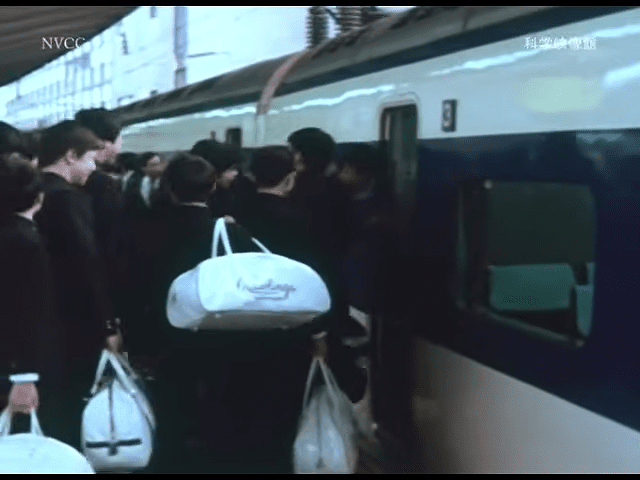
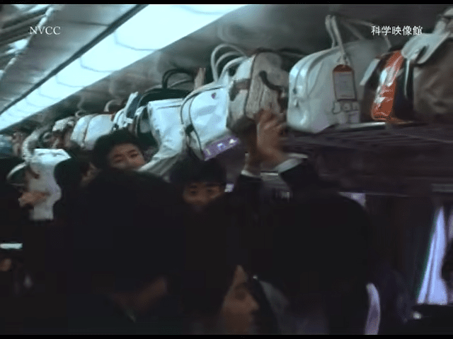
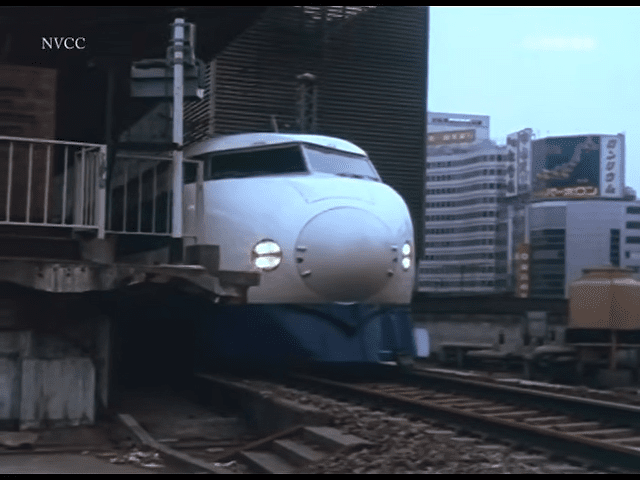
도쿄에서 출발하는 0계 신칸센
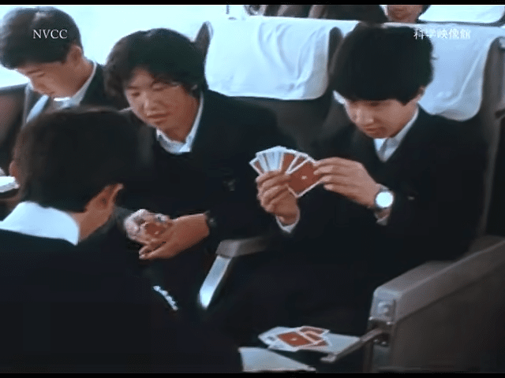
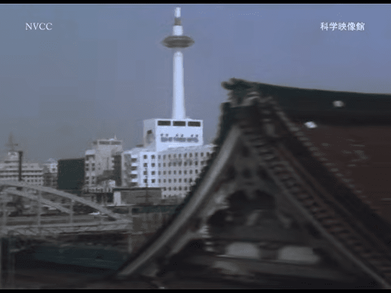
교토에 도착한것이 실감나는 교토타워
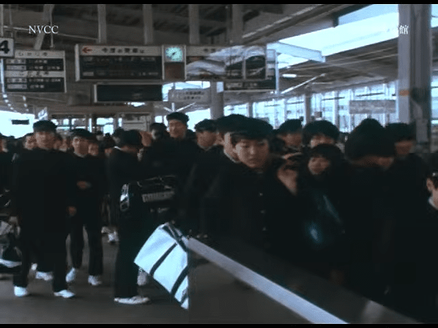
히카리로 3시간 10분 코다마는 4시간 걸렸었다
노조미는 2시간 30분 달성이 가능해진 92년도에 등장한 등급
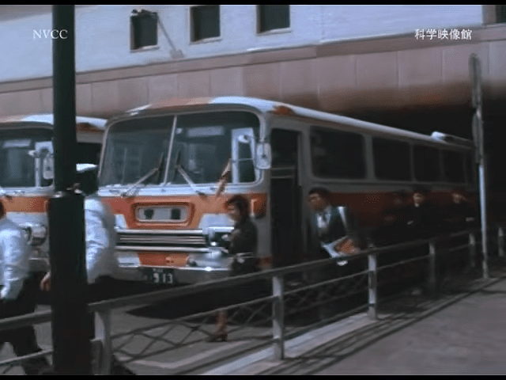
교토역에 도착하면 가이드를 따라 버스에 탑승
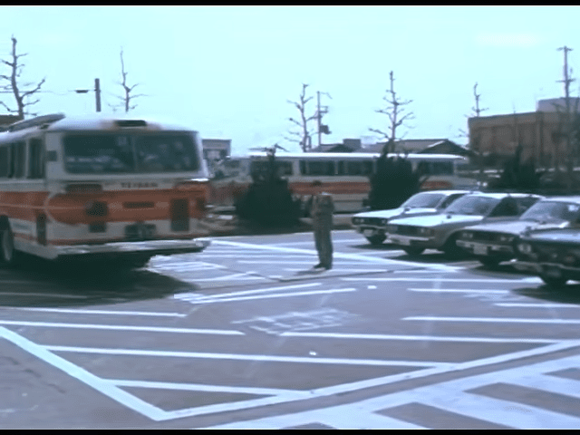
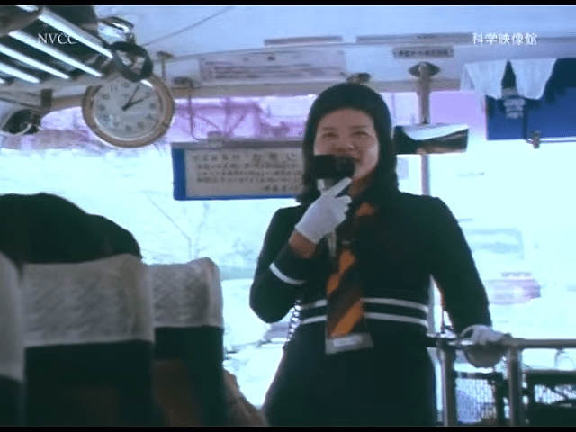
교토 관광지를 안내받으며 수학여행을 진행
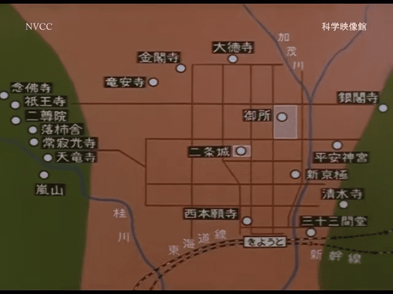
명소가 어디 가는건 아닌지라 지금 유명한 관광지와 차이가 없음
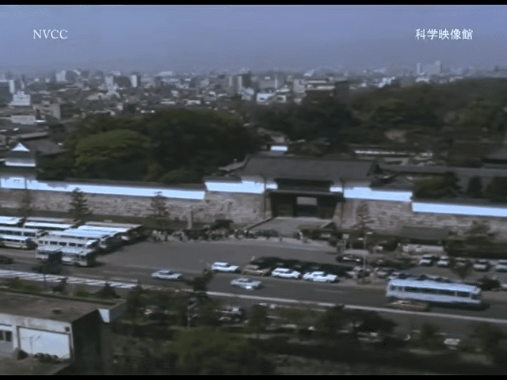
니조성
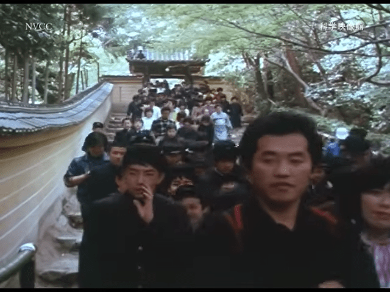
사람 많음
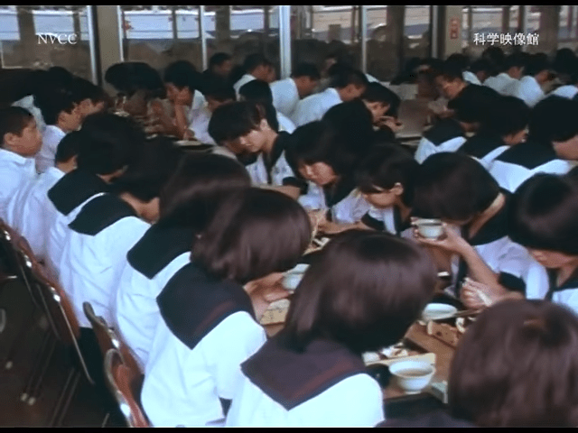
단체를 위한 식당
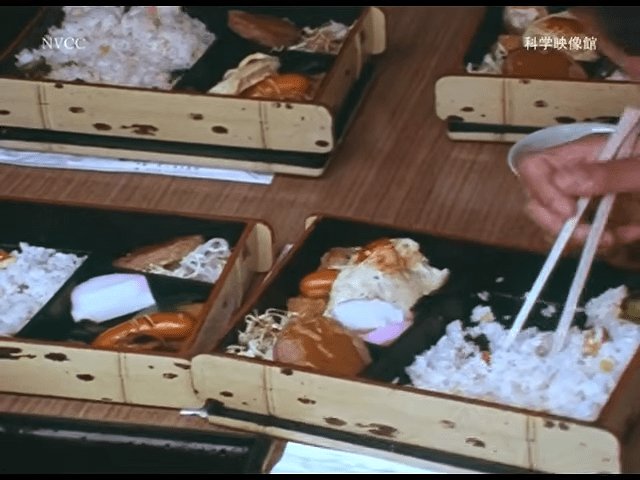
도시락 스타일로 제공
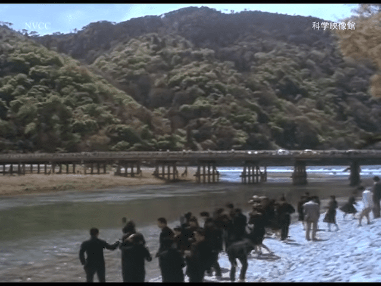
도게츠교
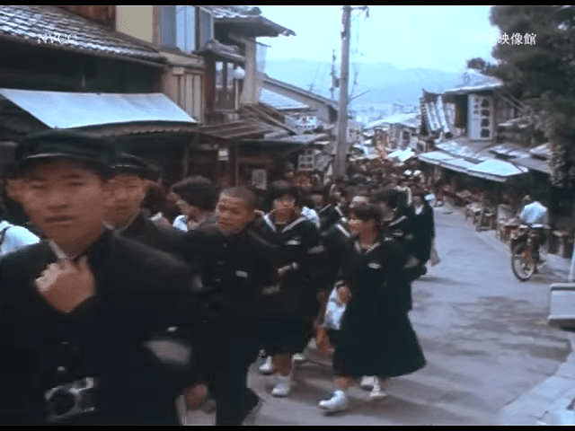
키요미즈자카 인가
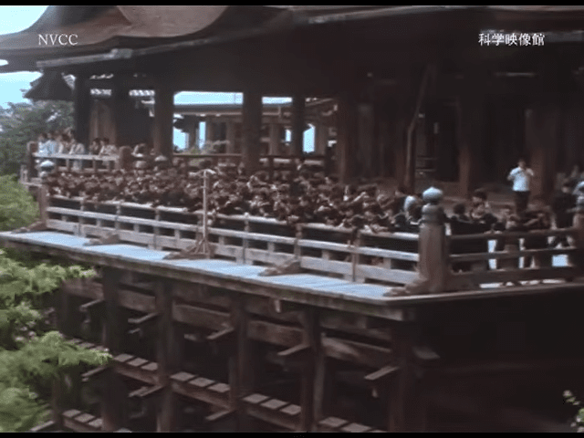
키요미즈데라
물마시는건 지금과 다를게 없네
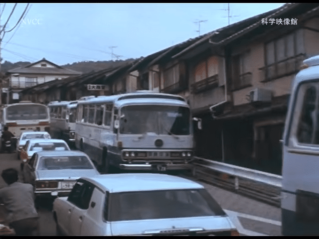
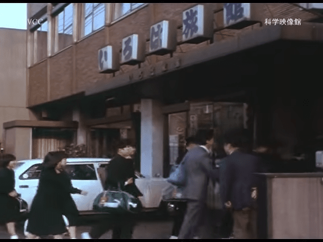
이로하료칸
수학여행 등 단체 전문 숙소였다고 함
15년도 까지 운영되다가 문닫고 그자리에 다시 호텔이 신축
산조케이한역 옆 '다와유라 쿄토' 자리
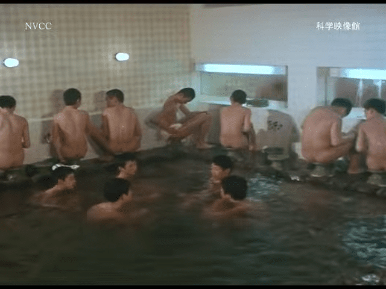
대중탕도 완비
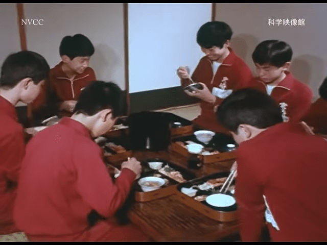
방안으로 식사를 가져다 주거나
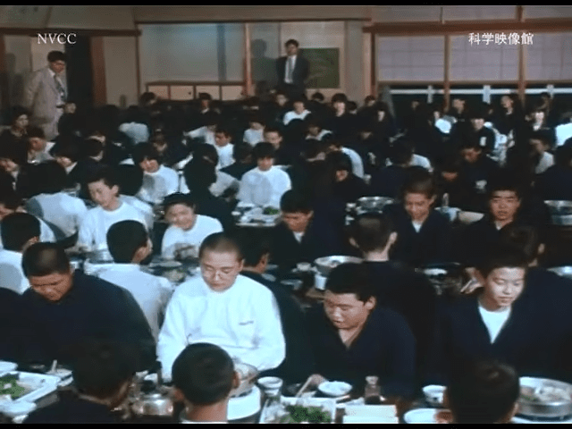
단체식당에서 석식을 먹기도 했다고
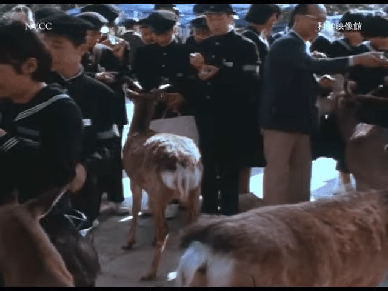
나라의 사슴들은 당시에도 깡패 였을까
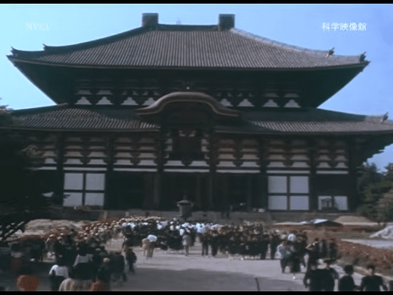
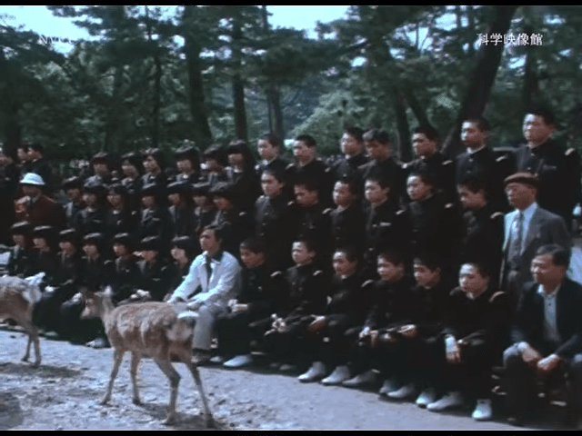
연습해온 포지션으로 사슴 세워두고 기념촬영
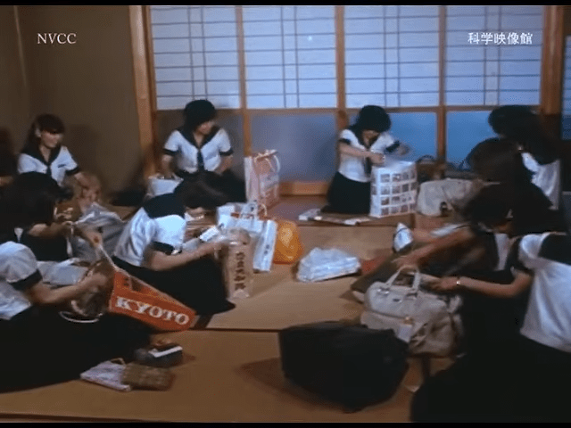
돌아가기 전날은 오미야게 정리
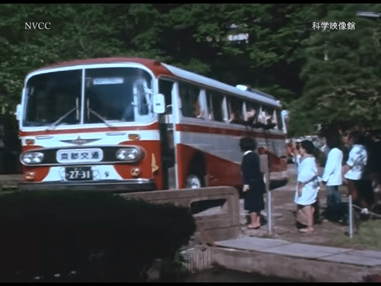
숙소 직원들의 배웅을 받으며 떠난다
댓글
수집 당시 댓글 76개
고닉치와 · 11.08 01:02:34
.키키 · 11.08 01:20:57
· 킷사마 · 11.08 07:20:31
토마토농장 · 11.08 02:43:34
· ㅇㅇ · 11.10 09:53:53
킷사마 · 11.08 07:20:22
땨뗘(봇) · 11.10 00:55:07
かなたん · 11.10 00:57:27
· ㅋㅋ · 11.10 00:58:34
· ㅇㅇ · 11.10 00:59:25
ㅋㅋ · 11.10 00:58:12
· ㅇㅇ · 11.10 00:59:33
· かなたん · 11.10 01:00:43
· ㅇㅇ · 11.10 04:27:32
ㅇㅇ · 11.10 00:59:19
· ㅋㅋ · 11.10 01:00:34
· かなたん · 11.10 01:01:19
つついあやめのおっと · 11.10 01:00:54
· ㅇㅇ · 11.10 01:02:47
· つついあやめのおっと · 11.10 01:04:16
· ㅇㅇ · 11.10 01:04:46
· ㅇㅇ · 11.10 01:13:36
· ㅇㅇ · 11.10 01:14:37
· つついあやめのおっと · 11.10 01:45:45
· ㅇㅇ · 11.10 02:27:25
· ㅇㅇ · 11.10 04:27:49
· ㅇㅇ · 11.10 04:28:06
· ㅇㅇ · 11.10 04:28:21
· ㅇㅇ · 11.10 04:28:36
· ㅇㅇ · 11.10 04:28:48
· ㅇㅇ · 11.10 04:29:01
· ㅇㅇ · 11.10 07:13:39
· ㅇㅇ · 11.10 09:54:38
· ㅇㅇ · 11.10 11:00:58
· つついあやめのおっと · 11.10 11:02:08
· ㅇㅇ · 11.10 11:17:21
ㅇㅇ · 11.10 01:02:44
미개
ㅇㅇ · 11.10 01:04:53
개센징
· ㅇㅇ · 11.10 04:29:15
ㅇㅇ · 11.10 01:06:27
신 석 열 · 11.10 01:09:58
이곳은
공기부터
매우
더럽군
ㅇㅇ · 11.10 01:11:29
ㅇㅇ · 11.10 01:23:17
ㅇㅇ · 11.10 01:43:46
푸른반복 · 11.10 03:30:56
ㅇㅇ · 11.10 04:11:08
· ㅇㅇ · 11.10 08:11:57
· ㅇㅇ · 11.10 09:56:24
· ㅇㅇ · 11.10 11:52:34
· ㅇㅇ · 11.10 11:53:56
모Y샀다가대가리깨진다 · 11.10 06:15:34
ㅇㅇ · 11.10 08:11:26
만갤초보 · 11.10 08:24:03
· ㅇㅇ · 11.10 16:55:09
ㅇㅇ · 11.10 09:34:13
· ㅇㅇ · 11.10 09:52:29
로갤러 · 11.10 09:37:38
· ㅇㅇ · 11.10 09:54:51
· ㅇㅇ · 11.10 16:55:19
짱~깨
ㅇㅇ · 11.10 09:53:32
ㅇㅇ · 11.10 09:53:57
· ㅇㅇ · 11.10 09:55:36
· ㅂ · 11.10 12:15:03
· ㅇㅇ · 11.10 16:54:58
짱~깨
타바코쉬카 · 11.10 10:27:21
ㅇㅇ · 11.10 13:21:49
ㅇㅇ · 11.10 13:42:25
ㅇㅇ · 11.10 13:42:29
ㅇㅇ · 11.10 13:42:34
ㅇㅇ · 11.10 13:42:40
ㅇㅇ · 11.10 13:42:45
ㅇㅇ · 11.10 13:42:52
ㅇㅇ · 11.10 14:04:49
· ㅇㅇ · 11.10 16:54:31
inspect2631 · 11.10 14:46:35
ㅇㅇ · 11.10 19:26:57